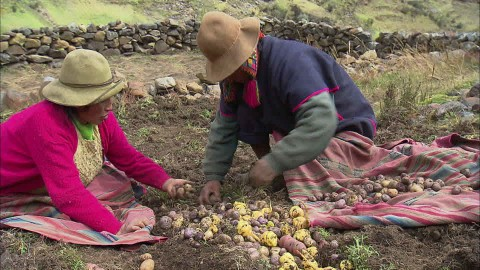
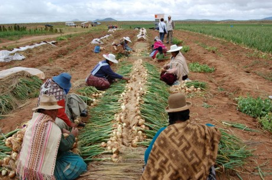

Org. Económica
La economía se basaba fundamentalmente en la actividad agrícola, el trabajo era colectivo y de manera igualitaria. La producción se repartía de la siguiente manera:

1.- para el Inca y la nobleza.
2.- para los sacerdotes y el culto a los dioses.
3.- para las viudas y huérfanos.
4.- para el pueblo.
Las actividades económicas se centraba en el Ayllu; cultivaron el maíz, papa, quinua, las calabas, el tomate, dependiendo del lugar, donde viven, Implantaron el cultivo en terrazas y construyeron almacenes para guardar los granos.
También se dedicaron a la ganadería especialmente de los camélidos como ser de las llamas alpacas del cual obtenían su lana, carne y los huesos para la industria y alimentación, por último, debemos señalar que no había moneda solo se daba en aquel tiempo el trueque, fue una actividad económica muy importante.